[1] "GSE52778_series_matrix.txt" "Homo_sapiens.GRCh37.75_subset.gtf"
[3] "quants" "sample_table.csv"
[5] "SraRunInfo_SRP033351.csv" "SRR1039508_subset.bam"
[7] "SRR1039509_subset.bam" "SRR1039512_subset.bam"
[9] "SRR1039513_subset.bam" "SRR1039516_subset.bam"
[11] "SRR1039517_subset.bam" "SRR1039520_subset.bam"
[13] "SRR1039521_subset.bam" RNA-seq analysis with Bioconductor
Previous student report based on the rnaseqGene Bioconductor workflow
Professor’s note
This branch isn’t perfect, but it will give you an idea of what I’m looking for in your final project. It represents the work of some previous students. The analysis script, in particular, is a little on the long side and is short on documentation toward the end of the document (including references).
Introduction: CRISPLD2
Airway dataset summarizes an RNA-seq experiment where airway smooth muscle cells were treated with dexamethasone, a synthetic glucocorticoid steroid with anti-inflammatory effects (Himes et al. 2014).
Step 1: Experimental Data
The dataset for this analysis was from the “airway” package.
To access this dataset we need to first install the BiocManager package:
if (!require("BiocManager", quietly = TRUE)) install.packages("BiocManager")
Then we can install the airway package:
BiocManager::install("airway").
Data: Experimental Data
Here is a list of the files in the airway package:
Data: Experimental Data
Under the “quants” directory we have these files:
[1] "SRR1039508" "SRR1039509"Data: Experimental Data
We can open the sample_table.csv and find the following data:
| SampleName | cell | dex | albut | Run | avgLength | Experiment | Sample | BioSample | |
|---|---|---|---|---|---|---|---|---|---|
| SRR1039508 | GSM1275862 | N61311 | untrt | untrt | SRR1039508 | 126 | SRX384345 | SRS508568 | SAMN02422669 |
| SRR1039509 | GSM1275863 | N61311 | trt | untrt | SRR1039509 | 126 | SRX384346 | SRS508567 | SAMN02422675 |
| SRR1039512 | GSM1275866 | N052611 | untrt | untrt | SRR1039512 | 126 | SRX384349 | SRS508571 | SAMN02422678 |
| SRR1039513 | GSM1275867 | N052611 | trt | untrt | SRR1039513 | 87 | SRX384350 | SRS508572 | SAMN02422670 |
| SRR1039516 | GSM1275870 | N080611 | untrt | untrt | SRR1039516 | 120 | SRX384353 | SRS508575 | SAMN02422682 |
| SRR1039517 | GSM1275871 | N080611 | trt | untrt | SRR1039517 | 126 | SRX384354 | SRS508576 | SAMN02422673 |
Data
From here, the example in the vignette uses these parts of the sample_text.csv:
| SampleName | cell | dex | albut | Run | avgLength | Experiment | Sample | BioSample | names | |
|---|---|---|---|---|---|---|---|---|---|---|
| SRR1039508 | GSM1275862 | N61311 | untrt | untrt | SRR1039508 | 126 | SRX384345 | SRS508568 | SAMN02422669 | SRR1039508 |
| SRR1039509 | GSM1275863 | N61311 | trt | untrt | SRR1039509 | 126 | SRX384346 | SRS508567 | SAMN02422675 | SRR1039509 |
Data
And calls the sample name from the “quants” directory:
Experimental Data
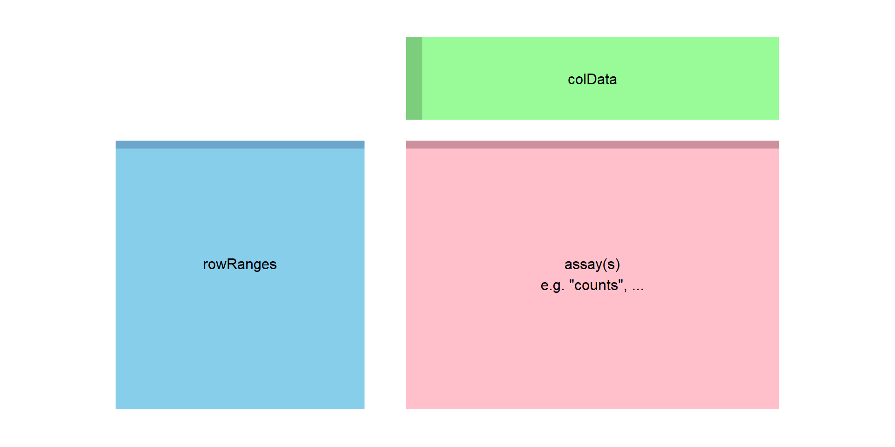
Overview of Analysis Method
Alignment of reads to a reference transcriptome
Generation of a count matrix and SummarizedExerpiment
Differential expression analysis using statistical modeling (using DESeq2)
STEP 2. Preparing quantification input to DESeq2
In order to run the count-based statistical methods such as : DESeq2, edgeR, limma, EBseq, baySeq. You would need to take the high-throughput sequences matrix’s into un-normalized counts.
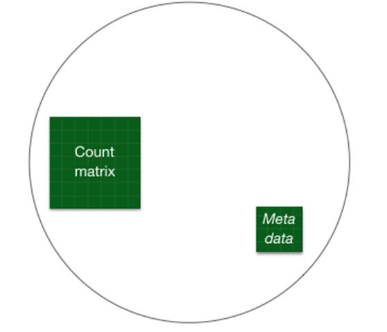
STEP 2. Preparing quantification input to DESeq2
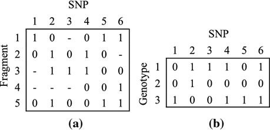
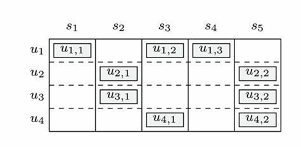
For the purpose of preparing the sequence for DESeq2, the data needs to be count matrix. The matrix contains raw counts of sequencing reads mapped to each gene for each sample.
WORKFLOW : COUNT MATRIX - TRASNCRIPT QUANTIFICATION (SALMON ) - TXIMPORT SUMMARY GENE-LEVEL
Align the reads to the genome and begin to count the reads that are consistent with the gene models. This is done by obtaining the transcript quantification.
Processes with transcript quantification methods such as (without aligning reads)
Salmon
Kallisto
RSEM
QUANTIFYING SALMON
Salmon is a A transcript quantification method that is fast, accurate and bias-aware in quantification from RNA-seq data.
Indexing the transcriptome
Obtaining the Reads
Quantifying the Samples
QUANTIFYING SALMON: INDEXING THE TRASNCRIPTOME
The index helps create a signature for each transcript in our reference transcriptome. The Salmon index has two components:
A suffix array (SA) of the reference transcriptome
A hash table to map each transcript in the reference transcriptome to it’s location in the SA (is not required, but improves the speed of mapping drastically)
QUANTIFYING SALMON: INDEXING THE TRASNCRIPTOME
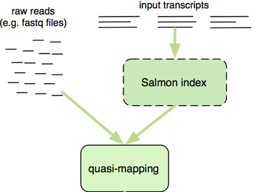
QUANTIFYING SALMON: OBTAINING THE READS
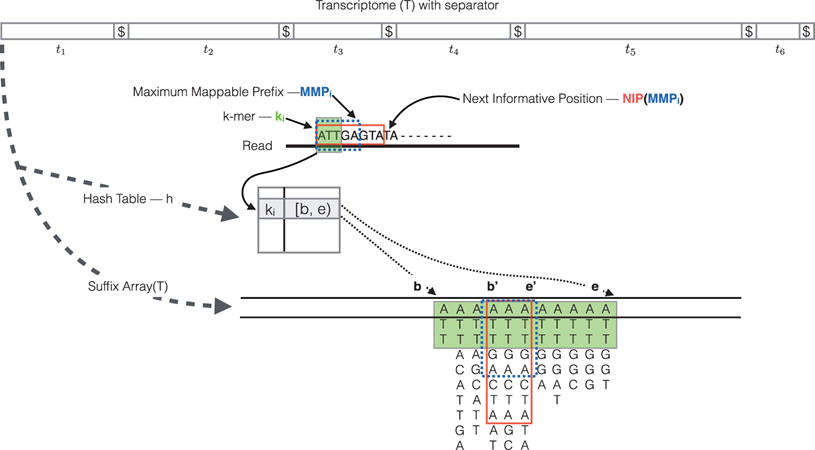
QUANTIFYING SALMON: ABUNDANCE QUANTIFICATION
After determining the read/fragment using the quasi mapping methods, salmon will generate the final transcript abundance estimates .
Length of the transcript
Effective length
TPM(transcripts per million) normalization method
Number of reads, estimate of number of reads drawn from this transcript given the transcripts relative abundance and length.
READING DATA WITH TXIMETA
HOW DOES TXIMPORT WORK:
It takes import transcript level estimates to summarize abundances, counts, and transcript lengths to the gene-level or outputs transcript level matrices.
The advantages of using the transcript abundance quantifiers in conjunction with tximport to produce gene-level count matrices and normalizing offsets are: this approach corrects for any potential changes in gene length across samples
READING DATA WITH TXIMETA
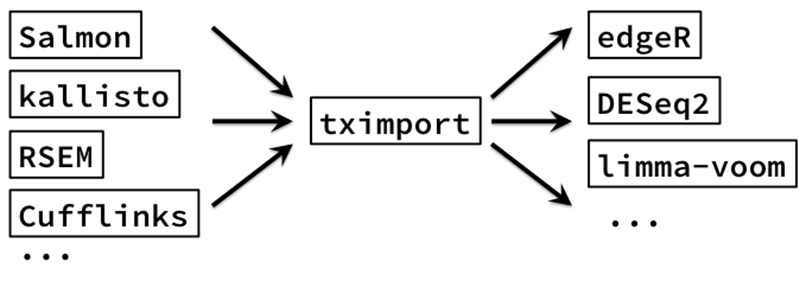
- DESEQ2 import functions
SUMMARIZED EXPERIMENT
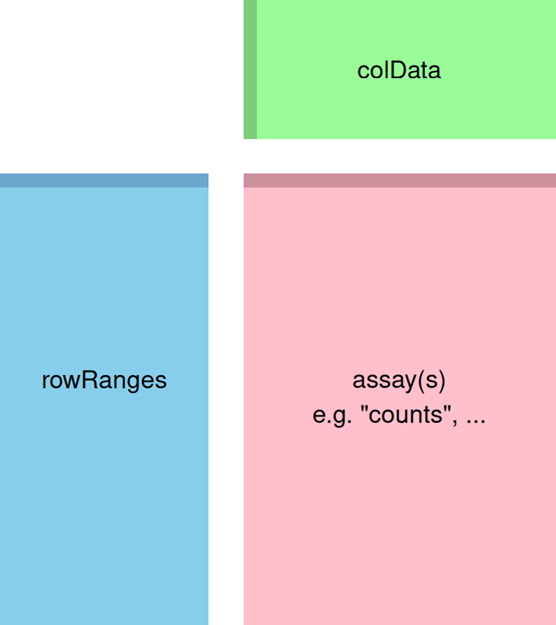
STEP 3: DESeq2
What is it?
What dose DESeqDataSet object do?
METHOD OVERVIEW OF WORKFLOW

METHOD HIGHLIGHT
These tools and methods are optimized for reproducibility, statistical rigor, and comprehensive visualization in RNA-Seq workflows. They align well with Bioconductor standards for analysis and open science. Preventing biases, in order to ensure that.
STEP 4: Exploratory Analysis and Visualization:
Scatterplot of transformed counts from two samples
It compares three transformations (log2, vst, and rlog) and shows the differences in density and spread of counts after applying transformation.
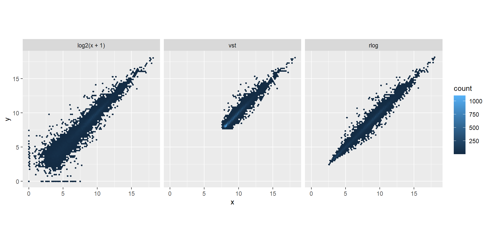
Heatmap of sample-to-sample distances using the variance stabilizing transformed values.
The plot compares untreated and treated groups across four conditions, indicating condition-specific and possibly variable treatment effects.
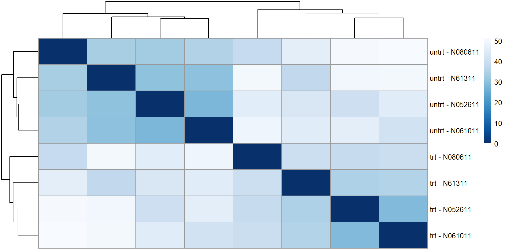
PCA plot using the VSD data
The PCA plot shows clusters of samples grouped by experimental conditions across four conditions. PC1 and PC2 explain 52% and 22% of the variance, respectively.
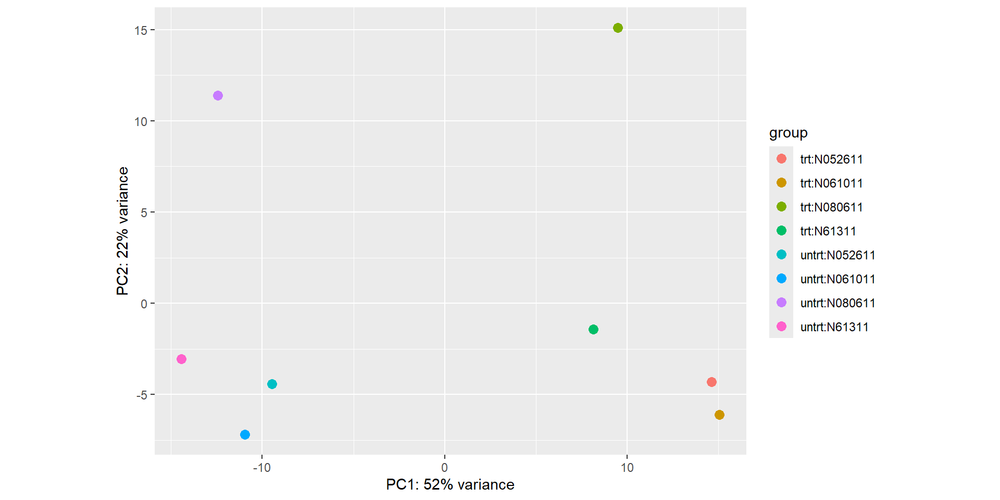
Normalized counts for a single gene over treatment group
It confirms the significance of a top differentially expressed gene.
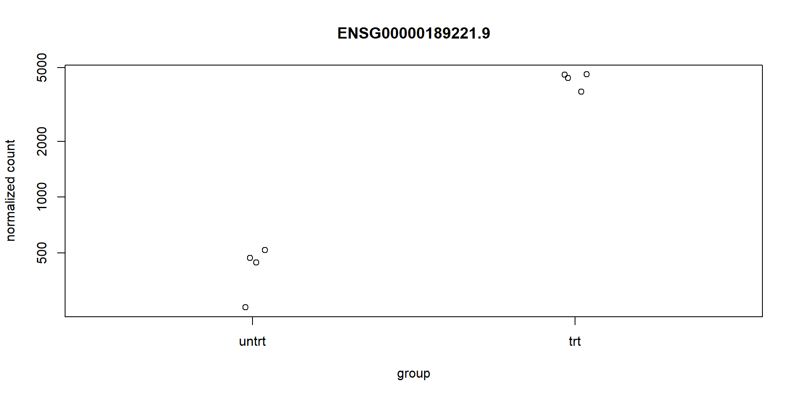
Heatmap of relative VST-transformed values across samples
It shows clusters of genes with similar expression patterns across conditions and highlights key genes driving variability in the dataset.
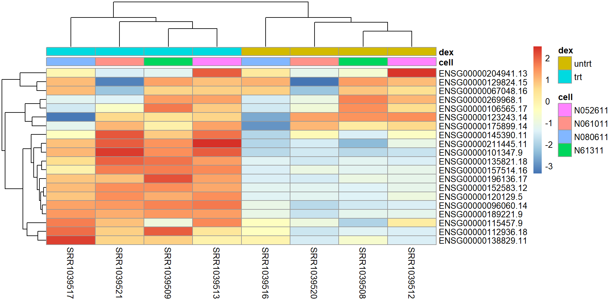
Normalized counts for a gene with condition-specific changes over time
It shows differences in expression dynamics over time.
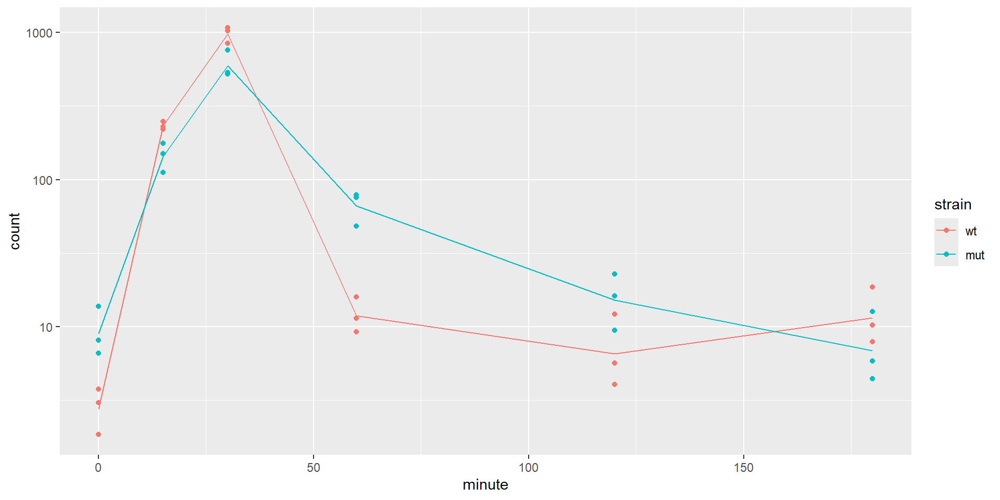
STEP 5: Differential Expression Analysis
Differential expression analysis aims to identify genes that exhibit significant changes in expression levels between two or more conditions.
Non-Treatment Group (gene expression on cells for)
Treatment Group (gene expression on cells for)
STEP 5: Differential Expression Analysis
The workflow of requires DESeqDATAset to run raw counts of genes in DESeq, returning:
estimate of size factor
estimate of dispersion values for each gene
fitting generalized linear model
STEP 5: Differential Expression Analysis
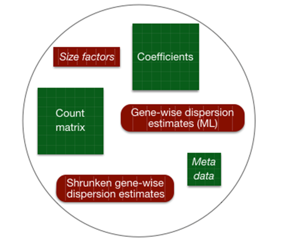
STEP 5: Differential Expression Analysis
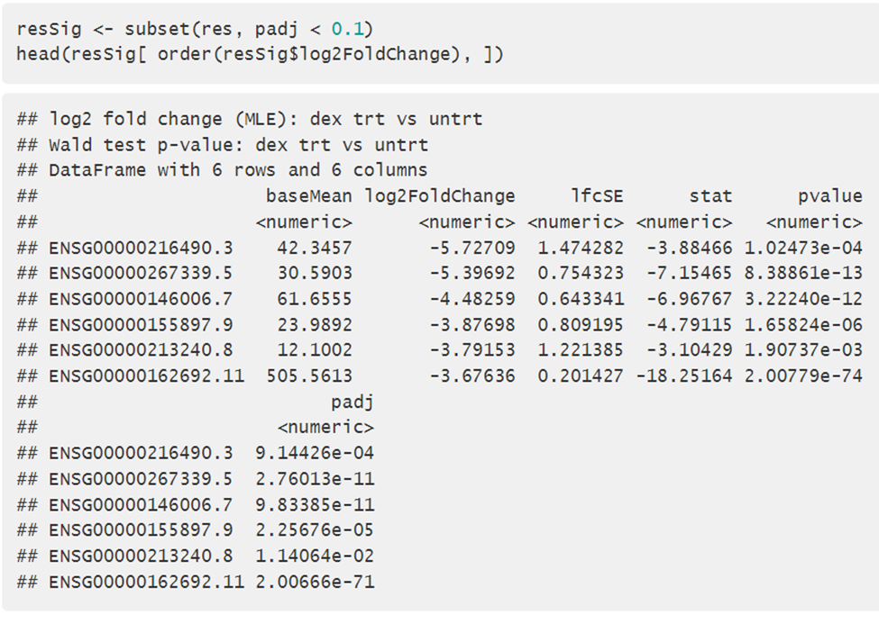
OVERVIEW DIFFERENTIAL GENE EXPRESSION
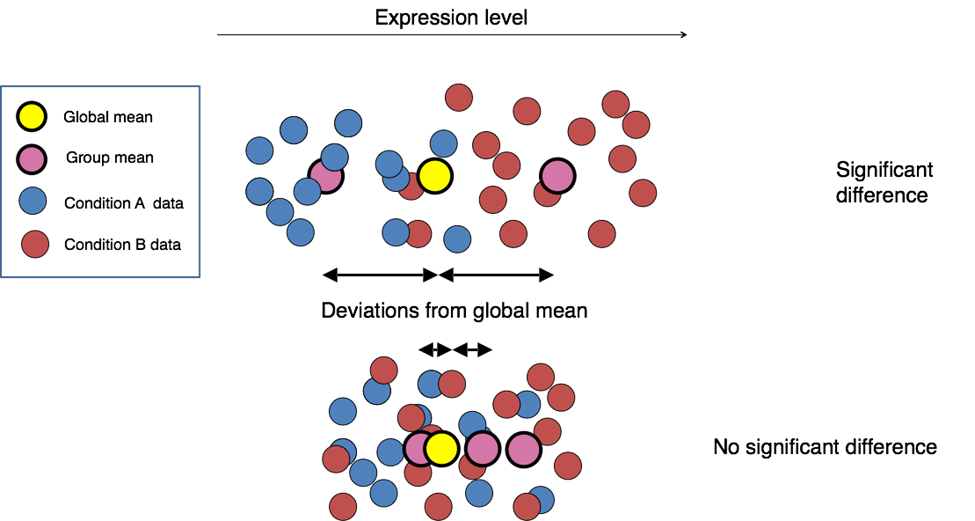
Conclusion
What interesting things / skills did you learn?
The detail and order it took to organize and produce count reads to prevent blanks, biases, and only targeted genes to be analyzed. There are several steps that are vital to output a SummarizedExperiment.
Using Salmon align reads to a reference transcriptome instead of a genome
There is difference between transcriptome level reads and genome level reads to analyze the gene counts.
What interesting things did you learn from the data?
PCA plots showed visibility the difference between the treatment and non treatment groups. Expected both groups to cluster together.
Greatest variance is being driven by the treatment group.
What challenges did you come across?
Authors reused variable names causing confusion in identifying data frames to troubleshoot errors and produce graphs.
Branch Management within Source-Tree and Github.
Plot errors; numeric and NA values were not aligned.
Himes, Blanca E., Xiaofeng Jiang, Peter Wagner, Ruoxi Hu, Qiyu Wang, Barbara Klanderman, Reid M. Whitaker, et al. 2014. “RNA-Seq Transcriptome Profiling Identifies CRISPLD2 as a Glucocorticoid Responsive Gene That Modulates Cytokine Function in Airway Smooth Muscle Cells.” PloS One 9 (6): e99625. https://doi.org/10.1371/journal.pone.0099625.